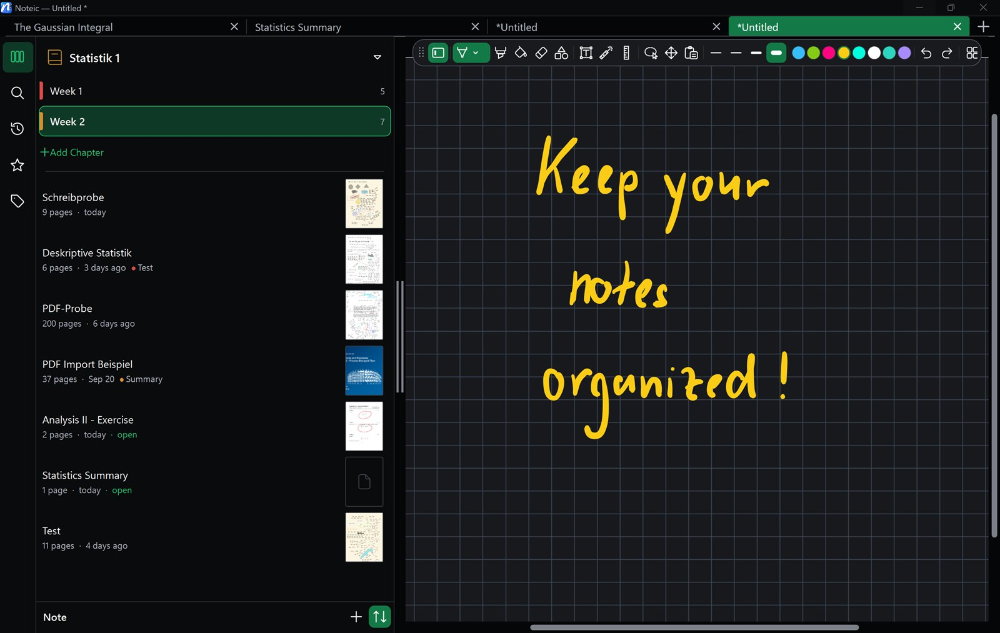

Settings
All settings are under … › Settings, in the More menu at the end of the toolbar. The arrow at the top takes you back to the menu.
Appearance#
- Light, Dark or System. System follows your Windows setting and is the default.
- Accent color: Blue, Indigo, Purple, Pink, Orange, Gold, Green, Petrol or Graphite. It colors Noteic itself, never your ink or paper.
- Dark pages: shows your pages dark on screen. Files, exports and PDF pages stay as they are. See Dark pages.
- Customize toolbar chooses which tools you see. See Customize the toolbar.
To move the toolbar to another edge of the window, drag its grip. See Move the toolbar.

Pen and ink#
- Ink prediction: Off, Gentle, Full or Max (8, 16 or 24 ms ahead). The ink runs a little ahead of the pen tip, which shortens the visible gap, but can overshoot briefly when you lift the pen. Gentle is the default.
- Pen cursor: what you see while your pen hovers: Default, a dot, a crosshair or an arrow. See Pen cursor.
- Pen side button: what the side button of your pen does while you hold it: nothing special (the default), Lasso, Eraser, Highlighter or Previous tool. See Pen side button.
- Top button: the top button of your pen is set up in Windows. Set it up in Windows opens Windows Settings › Bluetooth & devices › Pen & Windows Ink.
- Right mouse button: Off (the default), or the lasso icon to hold the button and drag to select. See Right mouse button.

Text#
Default text box font shows the font, size and color for new text boxes. To change it, set up a text box the way you like and choose … › Set as default in its toolbar. Reset goes back to Segoe UI, 12 pt, black.
Library#
Shows the folder where your notes live, by default Documents\Noteic.
- Open in Explorer opens the folder.
- Use another folder picks another folder as the workspace. Your notes stay where they are.
To keep several workspaces, for example one per semester, see Library › Workspaces.
Current page#
Paper & size opens the page menu for background, grid and page size. See Pages and paper.
Advanced#
Diagnostics turns on a display of performance and memory usage.
About Noteic#
… › About Noteic shows your version, for example 1.6.0.0, and a link to r/Noteic.